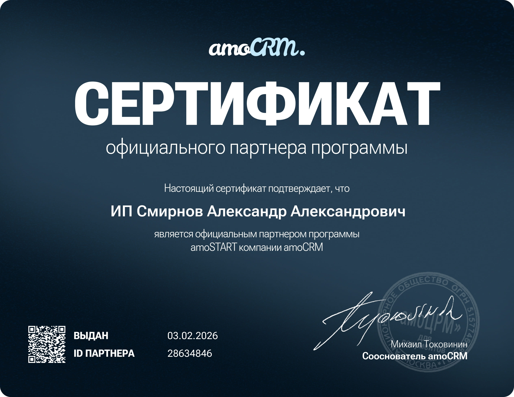

← На главную
Сертификат партнёра amoCRM
Здесь размещено подтверждение партнёрства/сертификации. При необходимости можем предоставить дополнительные данные по запросу.

Здесь размещено подтверждение партнёрства/сертификации. При необходимости можем предоставить дополнительные данные по запросу.